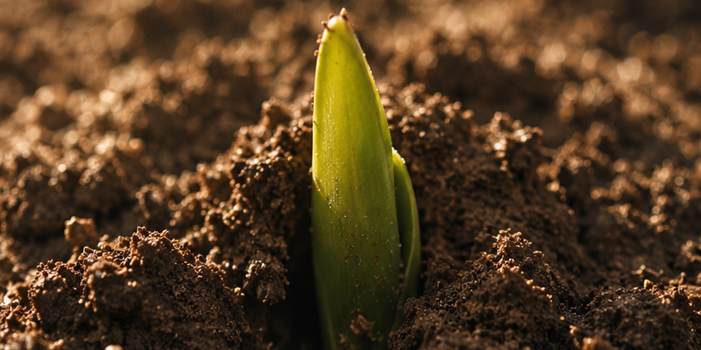

Patience
Some Seasons Are for Planting

There are stretches where you do everything right and nothing arrives. The work goes in daily, the plan is sound, and the visible result at the end of six months is approximately nothing. It is one of the most reliable places for good efforts to die.
Some seasons are for planting. You will see nothing for a long time. That is not failure; that is soil.
Leading and lagging
There is a distinction from management that clarifies this better than any amount of encouragement: leading indicators and lagging indicators.
A lagging indicator is the outcome you actually want — revenue, weight, audience, the finished book, the offer. It tells you what has already happened. It is the thing everyone measures, and it moves late.
A leading indicator is an input that predicts the outcome — sessions completed, pieces published, conversations had, applications sent. It moves immediately, it is fully under your control, and it is the only thing you can act on today.
Planting season is defined by a simple asymmetry: your leading indicators are moving and your lagging indicators are flat. That combination looks identical, from inside, to doing nothing at all. And because everyone judges by outcomes, that is the point at which people conclude the method has failed and change it.
Changing method during planting season is the single most common way to spend three years and harvest nothing. The seeds were fine. They kept being dug up to check.
Why the delay is real
The lag is not a psychological illusion. It is structural, and the reasons are worth naming because they tell you how long to expect.
Some outcomes require an accumulation to cross a threshold before anything is visible — a body of work large enough to be found, savings large enough to matter, enough skill to be worth hiring.
Some require other people, who move on their own schedule. You cannot make someone notice, decide, or reply this month.
And some involve compounding, where early growth is genuinely tiny in absolute terms even when the rate is healthy. Small numbers compounding look like stagnation for a long time, and then stop looking like it rather suddenly.
In all three cases the input-to-output delay is a property of the system, not a measure of how hard you tried.
The lag also explains a pattern that looks like unfairness from outside. Two people start together; one appears to get results much sooner. Often the difference is not effort or talent but the length of the delay attached to the particular thing they chose — some fields return signal within weeks, others take a year or more before anything is visible. Comparing your month six to someone else's month six across two different lag structures tells you nothing at all.
Soil is not nothing
The metaphor is more literal than it sounds. During a planting season the invisible work is not merely waiting — it is producing the conditions that make later results possible.
Skills are being built that will make next year's work faster. Relationships are being formed that will matter later. Judgement is developing, mistakes are being made cheaply while the stakes are low, and a body of work is accumulating that will eventually be large enough for people to encounter.
None of this appears in the outcome number, which is why the outcome number is such a poor guide during this phase. It is measuring the harvest in a month when there is no harvest to measure, and reporting zero, accurately and uselessly.
How to tell soil from a dead field
The honest caveat: not every flat period is planting. Sometimes an approach genuinely is not working, and the encouragement to keep watering is exactly wrong.
Three checks separate them.
Are the leading indicators actually moving? Not intentions — counts. If nothing measurable is going in, then nothing is being planted, and the flat outcome is simply accurate.
Is anything improving that is not the outcome? Skill, speed, quality, the response you get from people who look closely. Real planting seasons usually show movement somewhere, just not where you are looking.
Do people who have done this report a similar lag? This is the most useful check and the most neglected. Someone two years ahead of you can tell you whether eight months of nothing is normal in this particular field. Usually it is, and usually nobody thought to say so.
If all three come back reasonably, you are in soil. Keep watering, and set a review date rather than reassessing every fortnight.
What to do with this
- Track leading indicators weekly. They move, they are yours, and they are the only honest measure available during a lag.
- Set the review date in advance. "I will assess this in six months" prevents the daily referendum that kills good methods.
- Ask someone ahead of you how long the lag is. One conversation replaces months of speculation.
- Watch for improvement anywhere. Speed, quality, ease. Movement outside the outcome number is evidence the process is alive.
- Do not change two things at once. If you must adjust, adjust one variable so you can still tell what happened.
You will see nothing for a long time. That has been true of nearly everything worth having, and the people who got there were not more patient by temperament — they simply knew, in advance, that this stretch was part of it.
That is not failure. That is soil. Keep watering — it is coming.